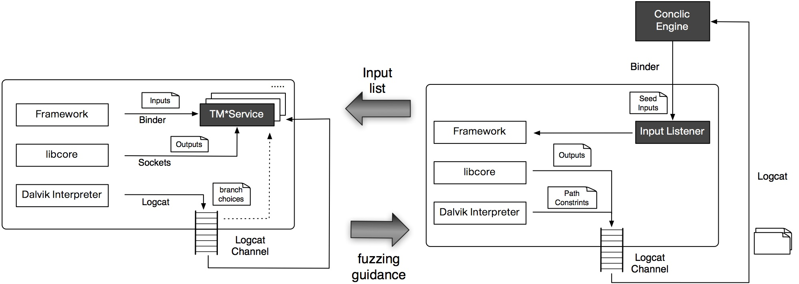

Funded Project
MINESTRONE: Identifying and containing software vulnerabilities
MINESTRONE is a novel architecture that integrates static analysis, dynamic confinement, and code diversification techniques to enable the identification, mitigation and containment of a large class of software vulnerabilities. Our techniques will protect new software, as well as already deployed (legacy) software by transparently inserting extensive security instrumentation.
SPARCHS: Symbiotic, Polymorphic, Autonomic, Resilient, Clean-slate, Host Security
The SPARCHS project is considering a new computer systems design methodology that considers security as a first-order design requirement at all levels, starting from hardware, in addition to the usual design requirements such as programmability, usability, speed, and power/energy efficiency.
Research Project
A comparison study of Dynamic Binary Instrumentation(DBI) frameworks
In this project, we perform comparison study that investigates various aspects of three different Dynamic Binary Instrumentation(DBI) frameworks. Oftentimes, one of these becomes system security researcher's choice for instrumentation framework to inline monitoring logic against unknown binaries. Currently, target frameworks for our study include PIN, DynamoRIO, and Valgrind. These three frameworks are the most representative DBI frameworks actively maintained by research communities. As their behavioral and performance implications significantly differ by each one's design philosophy and intended problem domain, we want to empirically evaluate them using criteria listed below.
- Userability: the framework's learning curve, the framework's user-friendliness of API, Supports from developer community
- Effectiveness/Capability: framework's ability to instrument and manipulate the target software provided without compromising the execution transparency.
- Efficiency: performance overhead of the framework when it instruments the target software.
Measurement of effectiveness and correctness of dynamic taint tracking
For past a few years, the technology of Dynamic Taint Analysis(DTA) has gained many attentions from research communities with its applications that span various research areas such as malware analysis, runtime attack detection, detection of information leakages and performance tuning. Albeit its known effectiveness, its correctness in terms of false positives(FPs) or false negatives(FNs) hasn't been studied with cares.

Dynamic instrumentation framework for sources and binaries
We can implement inline security monitor by instrumenting monitoring logics along with target application's execution. Traditionally, we can employ two different instrumentation approaches based on the availability of the application's source code. The approaches of source-to-source transformation or compilers can be used for the case where we have accesses to the source, while we use virtualization frameworks when we only see binary executables with no source access. Pros and cons of each approach are apparent. While the source based approach can provides better performance output optimizing monitoring logics along with the target application as it produce a single binary combining two different context, it has problem supporting libraries that comes without sources. As one can easily expect, it is common to have unknown binaries in its execution environments such as glibc library. In contrast, binary-only approach can trivial meet the goal of full coverages leveraging hypervisor layer with higher overhead switching back and forth two different contexts for the original execution and monitoring logic. However, for most of situations being neither black nor white(neither no source access nor allowance for the entire source base), it calls for development of new instrumentation framework that achieve the full coverage requirement maximizing the benefit of the allowed source access. In this project, we DynamoRIO plays a role of program loader which differentiates binaries prepared with LLVM-pass which runs for source code to instrument monitoring logics from the rest binaries which requires DynamoRIO's instrumentation to monitoring logic for binaries.
Runtime integer error detection
The problem of detection/prevention for integer error for applications written in C/C++ has long been around but none could come up with complete solution to clear the entire problem domain yet. Mechanical detection of integer error instrumenting application source code can be regarded as a straightforward process. However, what it makes complicated is to figure out code writer's intention as the compiler writers as well as application developers takes advantage of these errors in their code to speed up their applications. The real challenges lies in differentiating real errors from these intended practices. In this project, we integrate static and dynamic data flow tracking(DFT) to integer error detection system to address this issue of false positive(FP) and false negative(FN) specifically. Using DFT, we define relevant (source, sink) pairs that would differentiate integer errors which lead to serious bugs that the attackers can leverage to exploit. One example of these pairs can be values come through untrusted input(e.g., socket input, keyboard inputs) and flow into arithmetic operations that triggers integer errors. The other example can be pairs of the location of integers errors flows into security sensitive places such as arguments for memory allocation functions. The followings are the class of integer errors that we are aiming to catch.
- Integer overflow/underflow (CWE-190, CWE-191)
- Unexpected Sign Extension (CWE-194)
- Signed / Unsigned Conversion Error (CWE-195, CWE-196)
- Numerical Truncation Error (CWE-197)
- Divide by Zero (CWE-194)